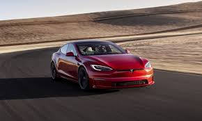

The Tesla Model S is a battery-electric, four-door full-size car that has been produced by the American automaker Tesla since 2012. The automaker's longest-produced model and second vehicle, critics have called the Model S one of the most significant and influential electric cars in the industry.
Tesla started developing the Model S around 2007 under the codename "WhiteStar". Initially, Henrik Fisker—known for his work with Aston Martin—was appointed as the lead designer for the WhiteStar project, but after a dispute with Elon Musk, Tesla's CEO, Fisker was replaced by Franz von Holzhausen. By 2008, von Holzhausen had designed the production Model S's exterior. Tesla unveiled a prototype of the vehicle in March 2009, in Hawthorne, California. To produce the Model S, Tesla acquired a facility in Fremont, California. Series manufacture of the Model S officially began at the Fremont facility, in June 2012. Tesla carried out the final assembly for European markets at its facilities in Tilburg, the Netherlands, between 2013 and 2021.